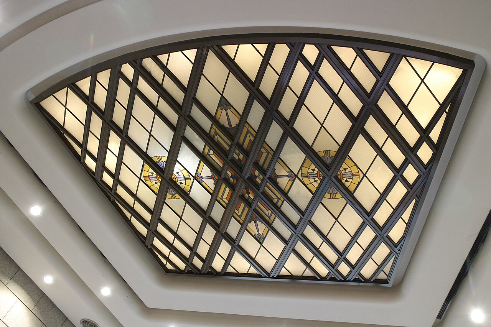
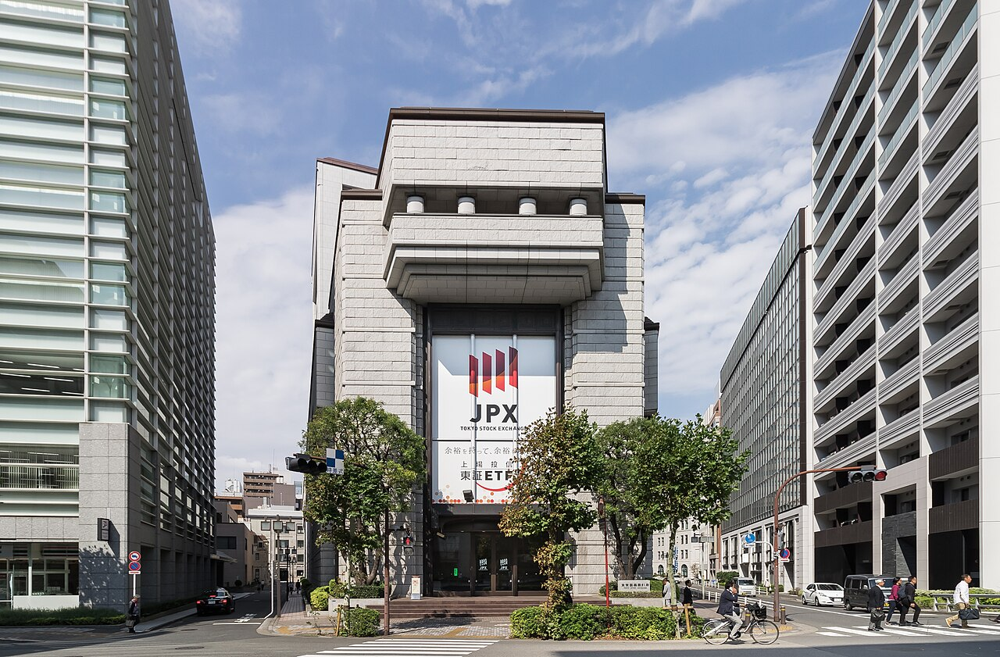
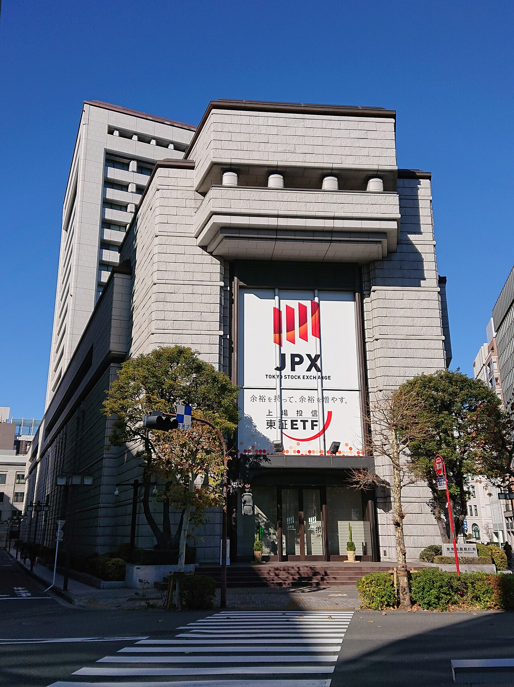
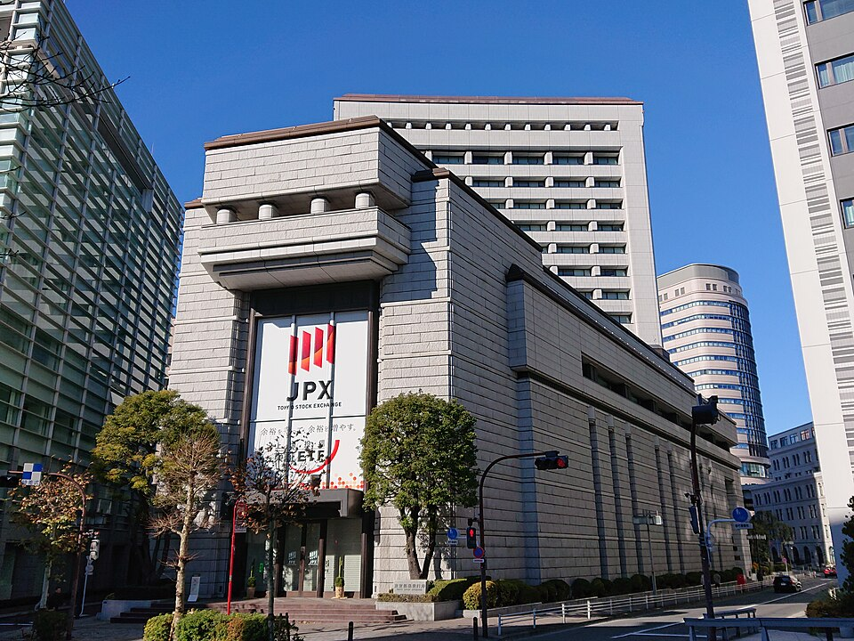
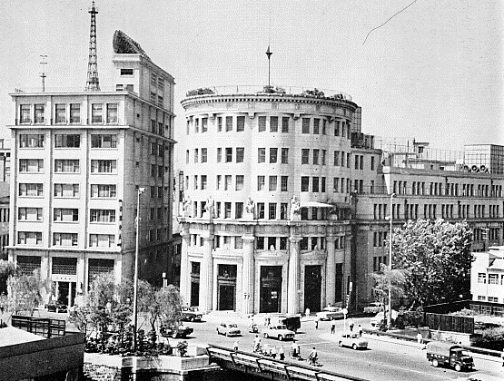
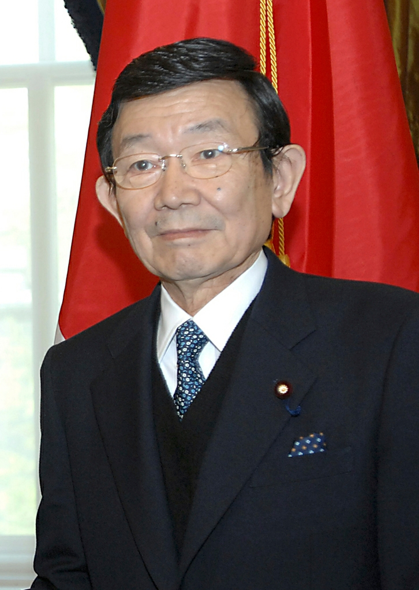
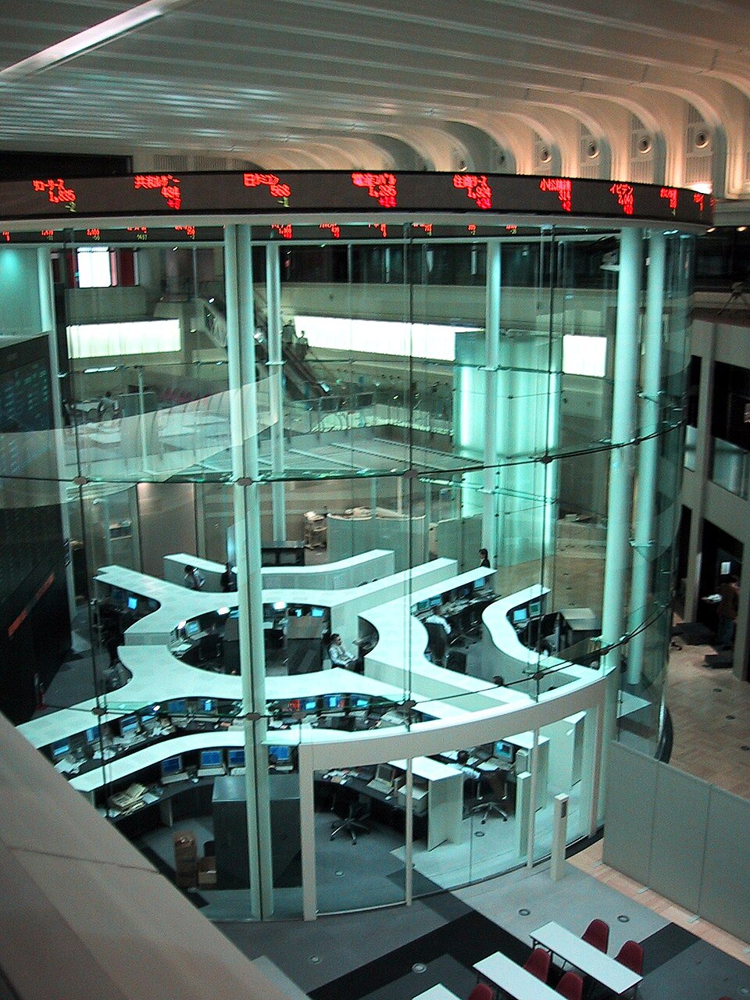

.jpg){kind=link}
_01.jpg){kind=link}
_02.jpg){kind=link}

_02.jpg){kind=link}


有
有村章
ありむら・あきら
NCC社長・CEO
役割：直接関与の具体的証拠は認定されなかったが、監査委員会の問題提起を深く追及しなかったと評価された
その後：重大な経営責任を負うと評価1
2004年〜2008年
日興プリンシパル・インベストメンツ（NPI）が100％支配するNPIホールディングス（NPIH）を連結範囲から外し、ベルシステム24株式への交換権付社債（EB債）の発行日を実際より遅らせたことで、NPI側だけに評価益を計上した。1
2005年3月期の連結経常利益は実際の589億6,800万円に対し777億1,700万円、連結当期純利益は352億6,800万円に対し469億3,500万円と記載され、500億円の社債募集にも使われた。1
SESCの検査と特別調査委員会の調査を経て、日興は5億円の課徴金を納付した。東証は上場維持を決めたが、シティグループの完全子会社化により2008年1月に上場廃止となった。2
日興コーディアルグループ（NCC）は投資業務を担う日興プリンシパル・インベストメンツ（NPI）を子会社としていた。NPIは投資案件ごとに特別目的会社を使い、NPIHもその一つとして設立・利用された。2004年7月16日、NPIとNPIHはベルシステム24の第三者割当520万株を1株20,050円で引き受けることを決議した。払込総額は1,042億6,000万円で議決権比率は約51.5％だった。NPIHは8月にCSKおよびCSKグループから株式を取得し、9月には他の株主を対象に1株28,000円のTOBを決めた。ベルシステム24は後に上場廃止となり、2005年1月25日にNPIHの完全子会社となった。1
NPIHはベルシステム24株式を取得するため、株式に交換できるEB債を発行し、NPIが引き受けた。社内では2004年8月4日に発行を決議したと扱われたが、特別調査委員会は、実際にスキームが確定したのは9月16日のNCC財務部会議だったと認定した。交換権行使価格は8月4日の終値24,480円を基準に設定され、TOB価格は28,000円だった。株価上昇分を利用すればNPI側に評価益が生じる一方、対応するNPIH側の評価損は連結外に残る構成だった。9月10〜13日のメールには、株式取得後の価格変動を避けるためEB債の発行日を8月6日以降または8月12日以降に設定する案が示されていた。1
この「チェーンメール・その２」からは、以下のようなＮＰＩの意図が窺われ、８月４日（水）にＥＢ債が発行されていなかったことが分かる。 （１）ＥＢ債の発行日を操作する意図 ＮＰＩ社員Ａのメールには、「ＥＢの場合、／８月５日（木）・・・時価は２４９９０円／８月６日（金）・・・時価は２４９００円／ＥＢを発行するタイミングは８月６日以降か、現物がある８月１２日（時価２４６３０円）以降が望ましいと思う。交換権行使価格は２２０００円強」という記載がある。 つまり、ＥＢ債を発行するとして、ベルシステム２４の日々の株価を後から眺めながら、都合のよい日、辻褄の合う日に発行日を自由に遡らせ、交換権行使価格も後から自由に設定しようとしている。しかも、これに対して誰も異論を唱えることなく、当然のこととして議議を進めている。
意味：発行日を株価に合わせて後付けする意図を、委員会がメールの内容から認定している。
NPIHはNPIが株式を100％所有し実質的に支配していた。しかし日興側は、投資会社が投資目的で保有する特別目的会社に関するVC条項を適用し、NPIHを連結範囲から除外した。特別調査委員会は、NPIHを連結しない判断をした人物を山本CFOと認定し、山本CFO以外にその会計処理を決定できる者はいなかったと述べた。また、NPIHにEB債を発行させ、TOBを実施させる意思決定者は山本CFOと平野NPI社長の2人と認定した。21
ＮＣＣ経営陣は、本件について徹底的な事実説明を行い、その結果を社会に公表して謝罪するという真摯な姿勢を持つことはなく、ＮＰＩ担当者に責任を押し付けて、経営陣の関与を打ち消すストーリーを社内外に説明することでこの事態を乗り切ろうとした。 １２月１８日（月）、ＮＣＣは臨時経営委員会を開催し、当日のプレスリリースと午後の記者会見に向けた最終調整を行い、午後には杉岡副社長、高橋取締役、森田ＣＦＯの３名が記者会見に臨んだ。 記者会見において、ＮＣＣ側は、本件ＥＢ債の発行手続きの瑕疵について、 ・担当者は、事後的に自分の失敗（ＥＢ債の発行に関する不備）をうまく繕ったが、これは極めて不適正な行為である。 ・担当者が意図したのは「ＥＢ債発行時の不備という自分の失敗」を誤魔化すことであった。 などと、あたかも一社員のミスであるかのような説明を行った。
意味：報告書は、会社の対外説明を「担当者個人への責任転嫁」と評価している。
2005年3月期の有価証券報告書には、連結経常利益777億1,700万円と連結当期純利益469億3,500万円が記載された。SESCは実際の利益をそれぞれ589億6,800万円と352億6,800万円と認定した。日興は2005年11月9日、この有価証券報告書を参照書類とする発行登録追補書類を提出し、11月22日に500億円の社債を一般募集した。虚偽記載は社内資料にとどまらず、投資判断に用いられた発行開示書類に掲載されたため、課徴金の根拠となった。23
調査委員 （９月１０日（金）時点で）発行されていないものを８月６日（金）に発行するってどういう意味？ ＮＰＩ社員Ａ ですから、全体をここで発行しなおしてということ、ですので、これについてはバックデートしようとしているように読める。 調査委員 ように見えるんじゃとすれば？真意は？ ＮＰＩ社員Ａ 全体をＥＢにして、うちが直接持ってグループに売るということを書いた。 調査委員 将来出されるＥＢもまとめてバックデートしようという話か？ ＮＰＩ社員Ａ 全体をひっくるめて８月６日（金）なり１２日（木）なり、株があるタイミングでＥＢ債が出ているようにして、全体をうちがＥＢを持って、交換行使をして、うちが全部を持って、それをグループに売ったらどうだということを書いた。それをやってたとしたら、おっしゃるとおりだという話になる。
意味：調査委員会の追及に対し、社員が、未発行のEB債を過去の日付に戻す構想を具体的に説明している。
2005年3月期決算を巡り、日興の監査委員会は評価益やNPIHの連結範囲について問題提起を繰り返した。特別調査委員会報告書は、監査委員会が山本CFO、金子会長。有村社長らに警告したと記している。中央青山監査法人側にも、長期保有を前提とする株式について多額の未実現利益を損益に入れることへの違和感があった。しかし日興財務部門は日本基準に従えば評価益の計上は避けられないと説明し、協議後も処理を維持した。2006年1月6日の会議ではベルシステム24を投資案件として扱い続ける方針が示され、1月30日には当期以降の会計処理を変更しないと監査委員会が報告した。1
渡邊（淑）監査委員 今期ベルシステム２４の経理処理に疑義がある。監査人の意見書では問題ないとなっているが、納得していない。ベルシステム２４の会計処理につき投資家に判り易いように開示をきちんとすべきだ。 金子会長 そういえば、経営会議で山本ＣＦＯに「ベルシステム２４の件を外に話してもいいか」と聞いたところ、明瞭ではなかった。会計士が山本ＣＦＯにこのように処理しろと言ったのか。 有村社長 そうではなく、山本ＣＦＯが会計士にこのような処理を強く迫ったと思う。 可知取締役 そう聞いている。 金子会長 これは粉飾決算ではないと思うが。 可知取締役 粉飾決算と思う。 渡邊（隆）監査役 中央青山の解釈はおかしい。会計士５人に聞けば４人は「ノー」と言うと思う。 有村社長 山本ＣＦＯにきちんと処理するように言っておく。
意味：社内メモには、監査側・経営側の認識の食い違いと、山本CFOへの疑念が直接記録されている。
2006年1月、参議院財政金融委員会でNCCのSPCを使った投資手法と会計処理が取り上げられた。7月11日、SESCは証券取引法26条に基づく立入検査を開始し、9月20日から12月5日まで関係者への事情聴取を行った。9月下旬、SESCはチェーンメールの存在を指摘したが、日興側は当初それを冗談または意味のつながらないメールとして過小評価したと特別調査委員会は批判した。12月11日、SESCは検査結果を伝え、EB債の発行日が後付けで操作され評価益が不正に計上されたとの認識を示した。12
しかし、ＮＰＩの関係者は、このチェーンメールがたんなる冗談であるとか、意味がつながっていないなどの弁解を繰り返した。ＮＣＣは、ＮＰＩ関係者の言い分に沿ってこのメールを過小評価し、ＳＥＳＣの指摘を契機として積極的、徹底的に真実を究明しようという姿勢に転ずることはなかった。 ＮＣＣには、ＮＰＩによるＥＢ債の発行日操作の重大性に対する認識が決定的に欠けていた。このため、９月下旬のＳＥＳＣの指摘にもかかわらず、最終的にＳＥＳＣから勧告を受けることになるまでの間（９月下旬～１２月中旬）、自らの手で徹底した社内調査を行って事実を究明し、問題点を洗い出し、これを直視して責任の所在を明らかにするという対応が行われることはなかった。
意味：委員会は、問題発覚後も会社が真相究明と責任追及を徹底しなかったと明確に批判している。
12月14日、NCC経営委員会は訂正報告書の提出、平野取締役兼執行役の辞任、役員報酬の減額。関係役員を中心とする課徴金5億円の個人弁済を決めた。有村章社長について、特別調査委員会は直接関与の具体的証拠を認めなかった一方、監査委員会から問題提起を受けながら山本CFOと平野社長に全幅の信頼を置き。深く追及しなかったとして重大な経営責任を評価した。日興側は担当者の事務ミスで利益水増しの意図はなく、NPIHの非連結処理も適正だったと説明した。SESCと金融庁側は連結除外と発行日操作を一連の虚偽記載として扱った。14
日興コーディアルグループの問題なのですけれども、会社側は会見では、この問題は監視委員会が指摘するように組織的なものではなくて、一部の社員がやったことだというような認識を示していたりとか、連結の範囲について基本的な考え方は妥当だったという認識を示していますけれども、監視委員会との考えの隔たりについてどのようにお考えでしょうか。 これからの弁明やその他説明を十分聞いてみなければ明らかにはなりませんけれども、今回の同社が行った行為というのは、証券取引法第172条１項に規定する重要な事項につき虚偽の記載がある発行開示書類に基づく募集により有価証券を取得させた行為に該当するものでありまして、社債発行について関係者に対して虚偽の開示書類を作ったということであります。その開示書類におけます非違性というのは少し著しいものがあるように証券監視委員会は指摘をしているところでございまして、それが単に一個人の、いわば不心得者の所業であるということで済まされるものかも今後のことではありますが、いわゆる財務体質や業務態勢、そういったものを順次正確に調査し、把握していただいて投資家や利害関係者に十分な説明ができるようにしていただかないとこの種の事件というのは将来また再び起こる可能性があるので、当該金融機関の信用にも大きく関わることだろうと思っております。
意味：会社側の「一部社員のミス」という説明に対し、監視委員会と大臣が組織・業務態勢の検証を求めている。
2006年12月18日、東証などは日興株を監理ポストに割り当てた。2007年3月12日、東証・大証・名証は監理ポスト割当てを解除し、日興株の上場維持を決めた。日興は適時開示について注意勧告を受け、改善報告書の提出を求められた。金融庁は上場維持判断は取引所規則に基づく取引所自身の判断として直接コメントを控えた。同年3月6日、シティグループは1株1,350円で公開買付けを発表し、その後買付価格を1,700円に引き上げた。2008年1月23日、株式交換による完全子会社化を理由に日興コーディアルグループは上場廃止となった。567
○政府参考人（三國谷勝範君） 個別の問題でございますのでなかなかお答えできない点もございますけれども、御指摘の点につきましては、日興コーディアルグループ自身の判断といたしまして、連結範囲に関する昨今の情勢変化にかんがみまして、買収目的会社十社を当期、これは十八年三月期でございますが、この末から連結の範囲に加えることとした旨を公表したものと承知しております。 この点を含めまして、個別の問題に関する点につきましては行政当局としてコメントをすることは差し控えさせていただきたいと存じますが、日興コーディアルグループが公表しているところによれば、連結範囲に関する昨今の情勢変化にかんがみ、十八年三月期よりそのような取扱いを行うこととしたものであるとのことでございます。 あくまで一般論として申し上げますと、会社が他の会社等の意思決定機関を支配している場合、当該他の会社を連結されることとされており、当該会社等を連結対象とするか否かにつきましては、その具体的な実態に即しつつ判断されることになるものと承知しております。
意味：国会答弁は、会社の意思決定機関を実質支配している場合は連結対象となるという一般原則を確認している。
金融庁は2006年12月18日に審判手続開始を決定し、2007年1月5日にSESCの勧告内容に沿って5億円の課徴金納付を命じた。納付期限は3月6日だった。日興は自主的な訂正報告書を提出し、関係役員の報酬を減額した。東証は上場維持と改善報告書の提出要求を選択したが、日興の上場はその後のシティグループによる完全子会社化で終わった。シティの買付けは上場維持または廃止の決定にかかわらず実施すると発表され、日興株主に対する買付価格は1,350円から1,700円へ変更された。行政処分、上場判断、買収は別々の手続で進んだため、事件の経過は会計処理だけではなく、当局、取引所、会社。株主の説明を並べて確認する。さらに、刑事・民事の判決詳細は確認できず、行政処分と社内処分が確認できる範囲となった。356
刑事・民事の判決詳細は確認できず、行政処分と社内処分が確認できる範囲となった。時系列と各資料を照合して確認する。3









| 日興コーディアルグループ本社 | 東京都中央区日本橋兜町6番5号 | 本社・特別調査委員会の調査場所 | 5 |
| 日興兜町ビル | 東京都中央区日本橋兜町 | 関係者聴取・委員会会議場所 | 1 |
| 東京証券取引所 | 東京都中央区日本橋兜町2番1号 | 監理ポスト・上場維持判断 | 9 |
| 金融庁 | 東京都千代田区霞が関3番2号 | 課徴金審判・行政処分 | 3 |
| 証券取引等監視委員会 | 東京都千代田区霞が関3番2号 | 立入検査・課徴金勧告 | 2 |
| 東京地方裁判所 | 東京都千代田区霞が関1番1号 | CSKの新株発行差止め申立ての審理 | 1 |
NPIH側の評価損を連結外に残し、NPI側のEB債評価益だけを連結財務諸表に反映させたうえで、虚偽記載を含む有価証券報告書を参照書類として社債を募集した。2
ありむら・あきら
NCC社長・CEO
役割：直接関与の具体的証拠は認定されなかったが、監査委員会の問題提起を深く追及しなかったと評価された
その後：重大な経営責任を負うと評価1
かねこ・まさし
NCC会長
役割：決算とガバナンスを担い、会計処理の問題提起を受けた
その後：具体的関与の証拠は認められず、監督責任が問題となった1
やまもと・けんぞう
NCC財務担当CFO
役割：NPIH非連結とEB債・TOBの意思決定者と認定された
その後：社内処分の対象1
ひらの・ひろふみ
NPI社長・後に会長
役割：EB債発行、発行日操作、TOBの意思決定者と認定された
その後：NCC取締役兼執行役を辞任1
きど・かずゆき
NPI社長
役割：EB債発行日操作に関与したNPI側役員の一人
その後：社内処分の対象1
もりた・たかゆき
NCC財務部門執行役
役割：山本CFOの後任CFO
その後：調査資料に記載1
まつがき・てつお
NCC監査特命取締役
役割：監査委員会関連の聴取対象
その後：未確認1
かち・まさたか
NCC監査特命取締役
役割：会計処理への問題提起に関与
その後：未確認1
わたなべ・よしお
NCC監査委員
役割：評価益計上に問題意識を示した
その後：未確認1
まつもと・けいじ
NCC監査委員
役割：監査委員会の議論に参加
その後：未確認1
おくやま・あきお
中央青山監査法人理事長
役割：有村社長との会議に出席した監査法人側責任者
その後：監査法人側の責任が検証された1
ひの・まさはる
特別調査委員会委員長
役割：日興内部調査を統括
その後：特別調査委員会報告書を取りまとめ1
くにひろ・ただし
特別調査委員・弁護士
役割：調査と聴取を担当
その後：未確認1
ごみ・ひろふみ
金融庁長官
役割：課徴金手続開始を説明
その後：行政処分を説明10
やまもと・ゆうじ
金融担当大臣
役割：日興側説明とSESC認定の相違を説明
その後：国会・会見で行政認定を説明4
よさの・かおる
金融担当大臣
役割：参議院委員会で事実関係調査を答弁
その後：未確認11
ちゃーるず・ぷりんす
シティグループCEO
役割：日興買収を進めたシティ側責任者
その後：未確認6
相関図は、NPIHの連結除外とEB債発行日をめぐる日興経営陣、監査委員会・監査法人、調査委員会、当局。買収者の職務上の関係を示す。闇の人脈欄に記載されたCSKとB投資事業有限責任組合は、資料で確認できる企業間の株式取引として示す。
上司と部下。有村社長はCFOを監督する立場だった。報告書は、有村が監査委員会から問題提起を受けながら、山本CFOと平野社長に全幅の信頼を置き。問題の具体的な原因を深く追及しなかったと評価した。出典1
上司と部下。有村社長はNPIを含むグループ経営を監督する立場にあり、EB債発行やTOBの意思決定に関する情報を得られる位置にいた。出典1
上司と部下。会長と社長として決算・ガバナンスを担い、社内会議で処理の適否を確認する関係だった。出典1
盟友。特別調査委員会は、EB債発行とTOBの最終承認を両者が行ったと認定した。出典1
上司と部下。NPI社員AらがEB債の評価益・発行日を議論し、財務部門の山本CFOらにスキームをつないだ。出典1
盟友。2004年9月のメールで、発行日、評価益。株式売却のタイミングを相互に検討した。出典1
上司と部下。社員Cは、会計・税務上有利なストラクチャーを整理して提案するよう社員B側に求めた。出典1
上司と部下。平野はNPIの最上位者として、EB債発行日操作の意思決定者と認定された。出典1
対立・確執。財務部門は評価益計上を主張し、監査法人側には未実現利益の計上への違和感があった。出典1
対立・確執。2006年1月6日、監査法人側はベルシステム24を投資案件として扱うのか、事業の一部とするのか確認した。出典1
対立・確執。渡邉監査委員は評価益の計上やNPIHの連結問題を問題提起した。出典1
対立・確執。可知は会議で会計処理を問題視する発言をしたが、後に「再調査を求める趣旨」と説明した。出典1
告発・警告。監査委員会は金子会長・有村社長に一定の警告を行った。出典1
対立・確執。SESCはNPIH非連結とEB債発行日操作を一連の虚偽開示として調査した。出典2
対立・確執。金融担当大臣は、日興側の「事務ミス」「連結処理は適正」とする説明と、SESCの認定が異なると公に説明した。出典4
資金の出し手と受け手。シティは日興株主から株式を取得し、日興の経営権を取得した。出典6
盟友・買収者と被買収者。両社は包括的戦略提携を締結し、証券・銀行・投資銀行業務の統合を進めた。出典6
渡邊（淑）監査委員 今期ベルシステム２４の経理処理に疑義がある。監査人の意見書では問題ないとなっているが、納得していない。ベルシステム２４の会計処理につき投資家に判り易いように開示をきちんとすべきだ。 可知取締役 これは粉飾決算と思う。 渡邊（隆）監査役 中央青山の解釈はおかしい。会計士５人に聞けば４人は「ノー」と言うと思う。 可知取締役 本件は、当てはめるべきルールが想定している事実と異なっているにも係わらず、故意に当てはめを行っており、おかしい。 有村社長 山本ＣＦＯにきちんと処理するように言っておく。
意味：問題が経営会議・監査機能の内部で早期に指摘されていたことを示す。
暴力団、総会屋、仕手筋、政治家への資金提供が本件の不正会計に関与したとの公的認定は。確認した一次資料では確認できない。確認できる関係は、CSKとの株式取得競争、B投資事業有限責任組合への株式売却。中央青山監査法人との監査対応である。
暴力団 確認できない
総会屋 確認できない
仕手筋 確認できない
政治家 確認できない
海外口座・SPC 確認できない
CSK、NPIH 認定
B投資事業有限責任組合 認定
中央青山監査法人 指摘
日興コーディアルグループの決算の件につきましては、本日午後３時30分でございますが、証券取引等監視委員会から証券取引法に基づいて同社に対し課徴金納付命令を発出することを求める勧告がなされました。具体的には、重大な事項について虚偽の記載がある有価証券報告書に基づくものであったということでございます。 証券市場において、仲介者として重要な機能を果たします証券会社を母体として設立をされ、活動しておられるグループであり、またこのグループ自体が市場におけるプレーヤーとしても活動しておられる。そうしたグループが、情報開示という市場の信任を確保する上で極めて重要な分野において、重要な事項について虚偽の記載のある発行開示書類に基づく募集を行ったという法令違反に問われたということは、市場の信任を確保するという意味で大変に残念な事態であると考えております。市場の信任は、当局による規制だけで確保できるものではございませんで、このように市場において実際に仲介をし、活動をする証券会社なりプレーヤー自身の倫理観によって支えられるというのが基本でございます。
意味：金融庁長官が、事件を市場参加者の倫理と信任の問題として位置づけている。
刑事起訴・有罪判決。確認したSESC・金融庁・特別調査委員会の一次資料では確認できない2
民事判決・損害賠償。中心的な行政資料と特別調査委員会報告書では詳細を確認できない1
| 金融庁 | 2007-01-05 | 課徴金5億円、納付期限2007-03-06 |
証券取引法違反に対する課徴金納付命令。確定3
| 東京証券取引所等 | 2006-12-18 | 監理ポスト割当て |
監理ポスト割当て。2007-03-12解除5
| 東京証券取引所等 | 2007-03-12 | 上場維持、改善報告書提出要求 |
監理ポスト解除・上場維持。確定5
| NCC経営委員会 | 2006-12-14 | 報酬50％または30％減額、平野氏はNCC取締役兼執行役辞任 |
社内処分。社内処分1
| 東京証券取引所 | 2008-01-23 | 完全子会社化を理由に上場廃止 |
上場廃止・完全子会社化。確定7
この「チェーンメール・その２」からは、以下のようなＮＰＩの意図が窺われ、８月４日（水）にＥＢ債が発行されていなかったことが分かる。 （１）ＥＢ債の発行日を操作する意図 ＮＰＩ社員Ａのメールには、「ＥＢの場合、／８月５日（木）・・・時価は２４９９０円／８月６日（金）・・・時価は２４９００円／ＥＢを発行するタイミングは８月６日以降か、現物がある８月１２日（時価２４６３０円）以降が望ましいと思う。交換権行使価格は２２０００円強」という記載がある。 つまり、ＥＢ債を発行するとして、ベルシステム２４の日々の株価を後から眺めながら、都合のよい日、辻褄の合う日に発行日を自由に遡らせ、交換権行使価格も後から自由に設定しようとしている。しかも、これに対して誰も異論を唱えることなく、当然のこととして議議を進めている。
意味：発行日を株価に合わせて後付けする意図を、委員会がメールの内容から認定している。
調査委員 （９月１０日（金）時点で）発行されていないものを８月６日（金）に発行するってどういう意味？ ＮＰＩ社員Ａ ですから、全体をここで発行しなおしてということ、ですので、これについてはバックデートしようとしているように読める。 調査委員 ように見えるんじゃとすれば？真意は？ ＮＰＩ社員Ａ 全体をＥＢにして、うちが直接持ってグループに売るということを書いた。 調査委員 将来出されるＥＢもまとめてバックデートしようという話か？ ＮＰＩ社員Ａ 全体をひっくるめて８月６日（金）なり１２日（木）なり、株があるタイミングでＥＢ債が出ているようにして、全体をうちがＥＢを持って、交換行使をして、うちが全部を持って、それをグループに売ったらどうだということを書いた。それをやってたとしたら、おっしゃるとおりだという話になる。
意味：調査委員会の追及に対し、社員が、未発行のEB債を過去の日付に戻す構想を具体的に説明している。
渡邊（淑）監査委員 今期ベルシステム２４の経理処理に疑義がある。監査人の意見書では問題ないとなっているが、納得していない。ベルシステム２４の会計処理につき投資家に判り易いように開示をきちんとすべきだ。 金子会長 そういえば、経営会議で山本ＣＦＯに「ベルシステム２４の件を外に話してもいいか」と聞いたところ、明瞭ではなかった。会計士が山本ＣＦＯにこのように処理しろと言ったのか。 有村社長 そうではなく、山本ＣＦＯが会計士にこのような処理を強く迫ったと思う。 可知取締役 そう聞いている。 金子会長 これは粉飾決算ではないと思うが。 可知取締役 粉飾決算と思う。 渡邊（隆）監査役 中央青山の解釈はおかしい。会計士５人に聞けば４人は「ノー」と言うと思う。 有村社長 山本ＣＦＯにきちんと処理するように言っておく。
意味：社内メモには、監査側・経営側の認識の食い違いと、山本CFOへの疑念が直接記録されている。
しかし、ＮＰＩの関係者は、このチェーンメールがたんなる冗談であるとか、意味がつながっていないなどの弁解を繰り返した。ＮＣＣは、ＮＰＩ関係者の言い分に沿ってこのメールを過小評価し、ＳＥＳＣの指摘を契機として積極的、徹底的に真実を究明しようという姿勢に転ずることはなかった。 ＮＣＣには、ＮＰＩによるＥＢ債の発行日操作の重大性に対する認識が決定的に欠けていた。このため、９月下旬のＳＥＳＣの指摘にもかかわらず、最終的にＳＥＳＣから勧告を受けることになるまでの間（９月下旬～１２月中旬）、自らの手で徹底した社内調査を行って事実を究明し、問題点を洗い出し、これを直視して責任の所在を明らかにするという対応が行われることはなかった。
意味：委員会は、問題発覚後も会社が真相究明と責任追及を徹底しなかったと明確に批判している。
調査委員 この件（調査委員会注：連結の件）についてＳＥＳＣの指摘にどう対応したのか？正しいと思っていれば戦うべきではなかったか？ 金子会長 この件については認めていない。しかし結局、連結しろという国家命令が下った訳であり、これに対して争った場合に被るリスクも不確定であった。おそらく勝てないと思った。 調査委員 勝てないというのは、何か別の理由があったのか？ 金子会長 私自身は、ギリギリまで断固戦うつもりであったが、ＥＢ債発行手続瑕疵の件が良くわからなかった。という訳で、公の場で戦うことによる勝算が不明だったため、結局、ＳＥＳＣの命令を当社の経営判断として受け入れたのである。 有村社長 今回の問題は、ＳＥＳＣがＥＢ（の発行日操作）と連結の二つの問題をセットにして処理しないといけないと言っている・・・・こうなった以上仕方ない。
意味：経営陣が連結問題への反論姿勢を示しながら、発行日操作については争いにくかった状況が表れている。
ＮＣＣ経営陣は、本件について徹底的な事実説明を行い、その結果を社会に公表して謝罪するという真摯な姿勢を持つことはなく、ＮＰＩ担当者に責任を押し付けて、経営陣の関与を打ち消すストーリーを社内外に説明することでこの事態を乗り切ろうとした。 １２月１８日（月）、ＮＣＣは臨時経営委員会を開催し、当日のプレスリリースと午後の記者会見に向けた最終調整を行い、午後には杉岡副社長、高橋取締役、森田ＣＦＯの３名が記者会見に臨んだ。 記者会見において、ＮＣＣ側は、本件ＥＢ債の発行手続きの瑕疵について、 ・担当者は、事後的に自分の失敗（ＥＢ債の発行に関する不備）をうまく繕ったが、これは極めて不適正な行為である。 ・担当者が意図したのは「ＥＢ債発行時の不備という自分の失敗」を誤魔化すことであった。 などと、あたかも一社員のミスであるかのような説明を行った。
意味：報告書は、会社の対外説明を「担当者個人への責任転嫁」と評価している。
渡邊（淑）監査委員 今期ベルシステム２４の経理処理に疑義がある。監査人の意見書では問題ないとなっているが、納得していない。ベルシステム２４の会計処理につき投資家に判り易いように開示をきちんとすべきだ。 可知取締役 これは粉飾決算と思う。 渡邊（隆）監査役 中央青山の解釈はおかしい。会計士５人に聞けば４人は「ノー」と言うと思う。 可知取締役 本件は、当てはめるべきルールが想定している事実と異なっているにも係わらず、故意に当てはめを行っており、おかしい。 有村社長 山本ＣＦＯにきちんと処理するように言っておく。
意味：問題が経営会議・監査機能の内部で早期に指摘されていたことを示す。
株式会社日興コーディアルグループは、 （１）子会社である日興プリンシパル・インベストメンツ株式会社（以下「ＮＰＩ」という。）が、その株式のすべてを所有し、実質的に支配しているＮＰＩホールディングス株式会社（以下「ＮＰＩＨ」という。）を連結の範囲に含めず、 （２）ＮＰＩＨが発行しＮＰＩが保有していた他社株券償還特約付社債券の発行日を偽るなどしてＮＰＩの会計帳簿等を作成し、本来計上できない当該社債券の評価益を計上する ことにより、連結経常利益が５８，９６８百万円であったにもかかわらず、これを７７，７１７百万円と記載し、連結当期純利益が３５，２６８百万円であったにもかかわらず、これを４６，９３５百万円と記載するなどした連結損益計算書を平成１７年３月期有価証券報告書に掲載し、平成１７年１１月９日、上記平成１７年３月期有価証券報告書を参照書類とする発行登録追補書類を関東財務局長に対して提出し、平成１７年１１月２２日、同発行登録追補書類に基づく一般募集により５００億円の社債券を取得させた。
意味：当局が、連結除外とEB債の発行日偽装を一連の虚偽記載として認定している。
日興コーディアルグループの決算の件につきましては、本日午後３時30分でございますが、証券取引等監視委員会から証券取引法に基づいて同社に対し課徴金納付命令を発出することを求める勧告がなされました。具体的には、重大な事項について虚偽の記載がある有価証券報告書に基づくものであったということでございます。 証券市場において、仲介者として重要な機能を果たします証券会社を母体として設立をされ、活動しておられるグループであり、またこのグループ自体が市場におけるプレーヤーとしても活動しておられる。そうしたグループが、情報開示という市場の信任を確保する上で極めて重要な分野において、重要な事項について虚偽の記載のある発行開示書類に基づく募集を行ったという法令違反に問われたということは、市場の信任を確保するという意味で大変に残念な事態であると考えております。市場の信任は、当局による規制だけで確保できるものではございませんで、このように市場において実際に仲介をし、活動をする証券会社なりプレーヤー自身の倫理観によって支えられるというのが基本でございます。
意味：金融庁長官が、事件を市場参加者の倫理と信任の問題として位置づけている。
日興コーディアルグループの問題なのですけれども、会社側は会見では、この問題は監視委員会が指摘するように組織的なものではなくて、一部の社員がやったことだというような認識を示していたりとか、連結の範囲について基本的な考え方は妥当だったという認識を示していますけれども、監視委員会との考えの隔たりについてどのようにお考えでしょうか。 これからの弁明やその他説明を十分聞いてみなければ明らかにはなりませんけれども、今回の同社が行った行為というのは、証券取引法第172条１項に規定する重要な事項につき虚偽の記載がある発行開示書類に基づく募集により有価証券を取得させた行為に該当するものでありまして、社債発行について関係者に対して虚偽の開示書類を作ったということであります。その開示書類におけます非違性というのは少し著しいものがあるように証券監視委員会は指摘をしているところでございまして、それが単に一個人の、いわば不心得者の所業であるということで済まされるものかも今後のことではありますが、いわゆる財務体質や業務態勢、そういったものを順次正確に調査し、把握していただいて投資家や利害関係者に十分な説明ができるようにしていただかないとこの種の事件というのは将来また再び起こる可能性があるので、当該金融機関の信用にも大きく関わることだろうと思っております。
意味：会社側の「一部社員のミス」という説明に対し、監視委員会と大臣が組織・業務態勢の検証を求めている。
○政府参考人（三國谷勝範君） 個別の問題でございますのでなかなかお答えできない点もございますけれども、御指摘の点につきましては、日興コーディアルグループ自身の判断といたしまして、連結範囲に関する昨今の情勢変化にかんがみまして、買収目的会社十社を当期、これは十八年三月期でございますが、この末から連結の範囲に加えることとした旨を公表したものと承知しております。 この点を含めまして、個別の問題に関する点につきましては行政当局としてコメントをすることは差し控えさせていただきたいと存じますが、日興コーディアルグループが公表しているところによれば、連結範囲に関する昨今の情勢変化にかんがみ、十八年三月期よりそのような取扱いを行うこととしたものであるとのことでございます。 あくまで一般論として申し上げますと、会社が他の会社等の意思決定機関を支配している場合、当該他の会社を連結されることとされており、当該会社等を連結対象とするか否かにつきましては、その具体的な実態に即しつつ判断されることになるものと承知しております。
意味：国会答弁は、会社の意思決定機関を実質支配している場合は連結対象となるという一般原則を確認している。
○国務大臣（山本有二君） 日興コーディアルグループにつきましては、平成十七年三月期の有価証券報告書等の財務書類につきまして、重要な事項に虚偽の記載が認められました。証券取引等監視委員会から課徴金納付命令の勧告を受けまして、本年一月、課徴金納付命令を行ったところでございます。 同社におきまして、過去に不適正な会計処理が行われていたことは事実でございます。既に証券取引等監視委員会が認定した事実を超えて、個別事案について当局として軽々に評価を申し上げることはできません。いずれにいたしましても、金融資本市場の信頼性を確保していく上で、企業財務情報の開示が適正に行われることは極めて重要でございます。各企業の経営者等におきましては、適正な開示の確保に向けまして万全を期していただきたいと考えるところでございます。
意味：金融担当大臣が、虚偽記載と不適正会計を国会答弁で明確に認めている。
日興事件が開示規制違反への社会的関心を高める契機になったと金融庁は整理した。14
虚偽記載などがあるが上場廃止には至らず、内部管理体制の改善が必要な企業を指定できる制度が導入された。15
上場制度では、虚偽記載、監査意見。内部管理体制を独立した審査対象として整理する方向が強まった。15
金融庁とSESCは日興事件を開示検査・課徴金制度の運用例として年次報告書に掲載した。16
監査法人に対する監査品質・独立性への監督が強まったが、日興事件との直接の因果関係を一つの資料で明確に示す資料は未確認。17
日興側：担当者の事務ミスであり、利益水増しの意図はなく、NPIHを非連結とした会計処理も適正だったと主張している。4
SESC・金融庁：NPIHの実質支配とEB債の発行日操作による評価益計上を一連の虚偽記載と認定した。2
特別調査委員会：EB債発行日操作などが意図を共有する関係者によって組織的に進められたと評価した。1
日興側・金融担当大臣の説明：日興側は一部社員の事務ミスと説明し、金融担当大臣はSESC側の説明との大きな違いを紹介した。4
東証：監理ポスト割当てを解除し、改善報告書の提出を求めたうえで上場維持を決めた。5
金融庁資料・特別調査委員会：特別調査委員会は組織的関与を評価した一方、金融庁資料は東証の審査理由の詳細が限定的であると紹介した。17